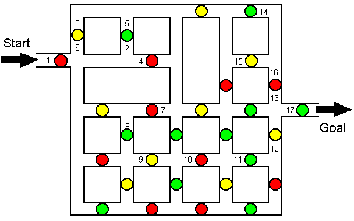

<DOCTYPE HTML PUBLIC "-//W3C//DTD HTML 4.0 Transitional//EN"><HTML>
<HEAD><TITLE>Solution to the Dot Maze</TITLE>
</HEAD><BODY BGCOLOR=#FFFFFF>
<CENTER><TABLE BORDER=0 WIDTH=70% CELLPADDING=0 CELLSPACING=0><tr><td>
<H2><FONT FACE=Arial>Solution to the Dot Maze:</H2></FONT> 
<FONT FACE="Times New Roman" SIZE=4>
Go through the dots in the order indicated by these numbers. Notice that you go through some dots more than once--<WBR>but in different directions.
</TABLE><P>

<P><BR><TABLE BORDER=0 WIDTH=70% CELLPADDING=0 CELLSPACING=0><tr><td>
<P><HR>
</FONT><FONT FACE="Arial" SIZE=3>
<A HREF="super.html#reviews">Back to reviews of <I>SuperMazes</I></A>.
</TABLE><P>
</BODY>
</HTML>

